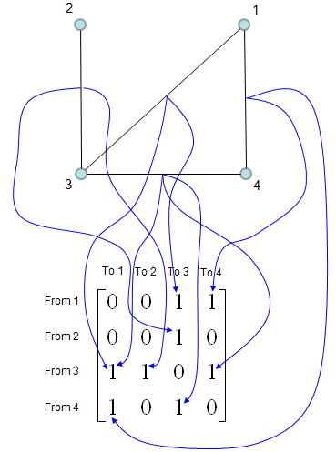
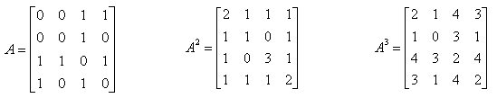
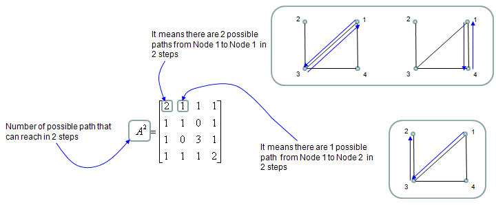

| Adjacency Matrix |
|
Adjacency Matrix is a matrix which describes the connectivity among the nodes in a graph. (Google "Introduction to Graph Theory" or "Graph Theory Tutorial" if you are new to this area). The way you can construct the Adjacency Matrix from a graph is as follows. I hope this illustrations gives you the intuitive understanding without much description. Basic idea is to put "1" at the matrix element representing two points (from, to) if there is a connection for the two points and put "0" otherwise.

Once you have the Adjacecy Matrix, you can do a lot of mathemtical operation for the matrix to find various useful information. The most common mathematical operation for the Adjacent Matrix is to take "Powers of the matrix". Following shows three matrix, A which is original adjacency Matrix and A^2 and A^3.

Element value in A^2 is the number of possible paths connecting the two nodes represented by the element. If an element value is "1", it means there is only one path from one node to the other node that is represented by the element. If an element value is "2", it means there are two possible paths from one node to the other node that is represented by the element as illustrated below. In most case, only those elements with the value of "1" has practical meaning.

Examples on YouTube
|